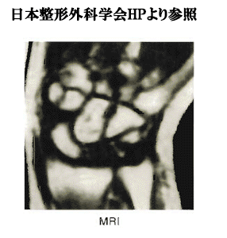
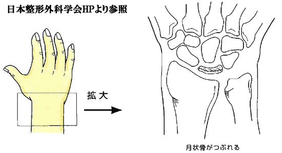

キーンベック病（月状骨軟化症）
キーンベック病とは
キーンベック病（月状骨軟化症）は、手首にある8つの手根骨のうち、ほぼ中央に位置する月状骨が血流不足で壊死し、つぶれて扁平化する症状です。
月状骨は周囲がほぼ軟骨に囲まれており、血流が乏しいため、血行障害により壊死しやすい骨の1つです。
1910年にオーストリアの放射線科医キーンベック氏が最初に報告したため、彼の名前に由来して「キーンベック病」と呼ばれています。


症状
手首の痛みや腫れ
握力の低下
手首の動きが悪くなる、こわばりが生じる
手作業が多い20〜40代男性の利き手側
※患者の10%は両手に発症することがある
原因
20～45歳の手をよく使う職業の男性の利き手に最も多く見られ、月状骨に負荷がかかりやすい関節の形の方や、手首に衝撃負荷がかかるスポーツ選手も起こると推測されています。
また、明らかな外傷や職歴のない女性や高齢者にも発症することがあります。
一説には月状骨の小さな不顕性骨折が原因とも考えられていますが、原因は不明です。
診断
キーンベック病の診断には画像検査が有効です。
MRIやCT検査により早期診断ができ、X線（レントゲン）検査で月状骨の形態を観察することで、病期の進行度を決定することができます。
また、症状がリウマチに似ているため、血液検査を行うことで判別を行います。
治療
キーンベック病の治療は、症状や年齢などによって異なります。
初期や疼痛が強い場合は、安静や装具による固定が行われますが、治らない場合には様々な手術が行われます。
月状骨がつぶれている場合は、痛みを軽減する最後の手段として、手首の骨を切除するか、手術でつなぎ合わせて固定する関節固定術を行います。
末期では、壊死した月状骨を摘出したり、そこに腱球を挿入する方法もあります。